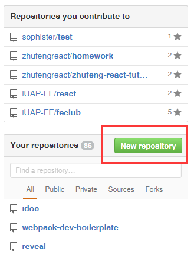

作为新时代的好码农，使用git和github来进行学习和交流是必备技能之一。这样我们就可以直接看流行技术的源码和demo、可以给开源项目贡献代码、也可以把自己的牛逼项目开源出来，在这里和大家分享。另外，大神什么的，都在这里活动，咱也来混个脸熟。好了，吹牛完毕，学好git用在工作中好好搬砖才是正经事，在github上学到好技术升职加薪迎娶白富美才是正经事，你梭484啊。
在使用Git前我们需要先安装 Git。Git 目前支持 Linux/Unix、Solaris、Mac和 Windows 平台上运行。 Git 各平台安装包下载地址为：http://git-scm.com/downloads
当然，也有相应的图形化工具可供下载使用，比如sourcetree.
Git 提供了一个叫做 git config 的工具，专门用来配置或读取相应的工作环境变量。 这些环境变量，决定了 Git 在各个环节的具体工作方式和行为。这些变量可以存放在以下三个不同的地方：
用户信息
配置个人的用户名称和电子邮件地址：
$ git config --global user.name "GuoYongfeng"
$ git config --global user.email "296512521@qq.com"
可以查看已有的配置信息
$ git config --list
你的本地仓库由 git 维护的三棵“树”组成。第一个是你的 工作目录，它持有实际文件；第二个是 缓存区（Index），它像个缓存区域，临时保存你的改动；最后是 HEAD，指向你最近一次提交后的结果。
新建一个仓库
$ mkdir demo && cd demo
$ git init
如果已经有了仓库，就可以直接clone到本地
$ git clone git@github.com:GuoYongfeng/webpack-dev-boilerplate.git
git add 命令可将该文件添加到缓存，如我们添加以下两个文件：
$ touch README.md
$ git add README.md
还可以
$ git add -A
$ git add *
git status 可以查看当前版本库各个文件的状态
$ git status
使用 git add 命令将想要快照的内容写入缓存区， 而执行 git commit 将缓存区内容添加到仓库中。
$ git commit -m '第一次版本提交'
git reset HEAD 命令用于取消已缓存的内容。
$ git reset HEAD -- hello.php
如果粗暴一点
$ git reset --hard 版本号
$ git rm README.md
配置别名的好处是方便简写命令
$ git config --global alias.st status
$ git config --global alias.ci commit
$ git config --global alias.co checkout
$ git config --global alias.br branch
$ git config --global alias.lg "log --color --graph --pretty=format:'%Cred%h%Creset -%C(yellow)%d%Creset %s %Cgreen(%cr) %C(bold blue)<%an>%Creset' --abbrev-commit"
把代码从本地push到服务器上，这意味着我们首先要有个服务器或是托管我们代码的第三方服务，公司有gitlab也可以直接push到那。
为了方便练习，更为了以后学习，强烈建议直接把代码push到github进行托管。
首先需要在本地生成key，并且把key配置在github上
$ ssh-keygen -t rsa -C "guoyff@yonyou.com"
复制ublic key
$ cat ~/ssh/id_rsa.pub
当然，你也可以直接使用nodepad++等编辑器打开这个文件，复制出来。 （如果你是windows用户，这个文件一般会在这里：C:\Users\Administrator.ssh）
将获得的public key添加在github账户上：
右上角点击头像-> 点击settings-> 点击SSH KEYS-> 点击ADD SSH KEYS-> 将获取的public key粘贴于此

如果你还没有克隆现有仓库，并欲将你的仓库连接到某个远程服务器，你可以使用如下命令添加：
# 为这个仓库添加一个远程地址
$ git remote add origin 你的github上的仓库地址（比如： git@github.com:GuoYongfeng/webpack-dev-boilerplate.git）
如此你就能够将你的改动推送到所添加的服务器上去了。
执行如下命令以将这些改动提交到远端仓库：
# 将本地版本库的资源推送到远程服务器
$ git push origin -u master
可以把 master 换成你想要推送的任何分支。
分支是用来将特性开发绝缘开来的。在你创建仓库的时候，master 是“默认的”。在其他分支上进行开发，完成后再将它们合并到主分支上。
我们可以首先创建一个分支
$ git branch mybranch
然后切换到这个分支
$ git checkout mybranch
或者可以更快一点，创建一个分支并且切换过去
$ git checkout -b mybranch
如果这个分支你不想要，也可以直接删除掉
$ git branch -d mybranch
如果你和其他小伙伴基于这个分支协作，那么你需要把这个分支push到远端仓库，不然的话，这个分支是存在于你的本地的，其他的小伙伴就看不到了。
$ git push origin mybranch
要更新你的本地仓库至最新改动，执行：
git pull origin master
这样就将本地的master分支和远程同步了
也可以使用fetch和rebase来进行分支的更新
$ git fetch origin
$ git rebase origin/master
以在你的工作目录中 获取（fetch） 并 合并（merge） 远端的改动。 要合并其他分支到你的当前分支（例如 master），执行：
$ git merge <branch>
无论是分支的更新还是合并，git 都会尝试去自动合并改动。不幸的是，自动合并并非次次都能成功，并可能导致 冲突（conflicts）。 这时候就需要你修改这些文件来人肉合并这些 冲突（conflicts） 了。改完之后，你需要执行如下命令以将它们标记为合并成功：
$ git add <filename>
在合并改动之前，也可以使用如下命令查看：
$ git diff <source_branch> <target_branch>
处理冲突之后就可以commit了
$ git commit -m "fix conflict"
在软件发布时创建标签，是被推荐的。
使用如下命令获取版本号：
$ git log
可以执行如下命令以创建一个叫做 1.0.0 的标签：
$ git tag 1.0.0 1b2e1d63ff
1b2e1d63ff 是你想要标记的提交 ID 的前 10 位字符。
假如你做错事（自然，这是不可能的），你可以使用如下命令替换掉本地改动：
$ git checkout -- <filename>
此命令会使用 HEAD 中的最新内容替换掉你的工作目录中的文件。已添加到缓存区的改动，以及新文件，都不受影响。
假如你想要丢弃你所有的本地改动与提交，可以到服务器上获取最新的版本并将你本地主分支指向到它：
# 获取的版本号可以使用git log拿到
$ git reset --hard 希望回退的版本号
这不是一个完整的教程，我们的目的是让你通过这个练习能够快速上手，并且了解git的基本使用，那就足够了。